東京電機大学コンテナ型仮想化
2019/12/11
マクニカソリューションズ株式会社
Minehiko Nohara
ハンズオン
dockr hubにアクセスする
https://hub.docker.com/
アカウント作成1
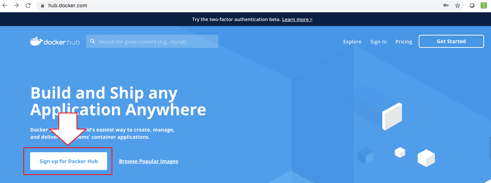
アカウント作成2
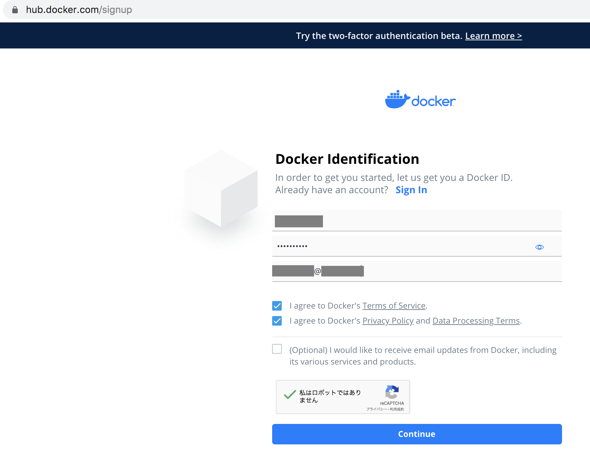
アプリケーションの検索
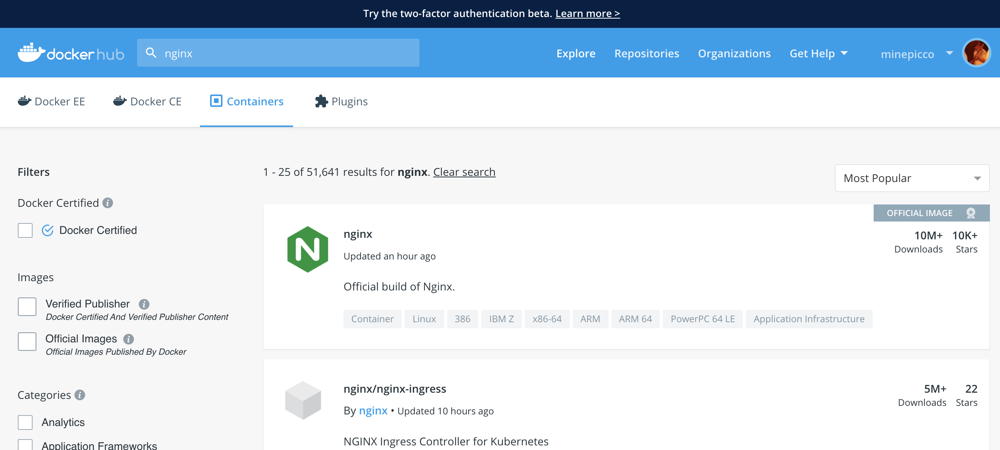
Tag
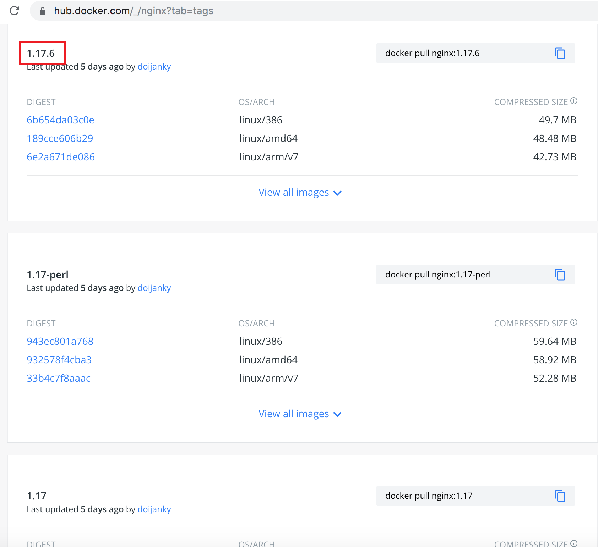
3. ハンズオン環境へのアクセス
https://labs.play-with-docker.com/docker hubのアカウントでログイン
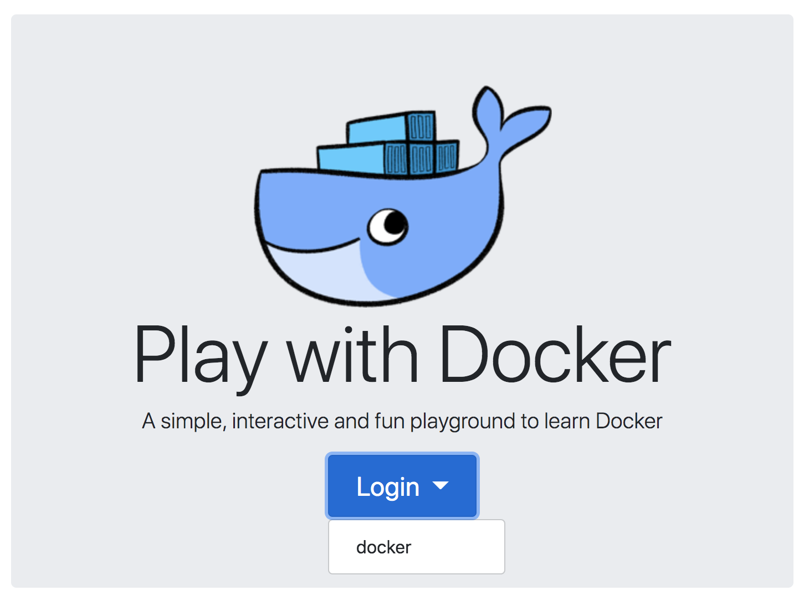
docker hubのアカウント情報を入力
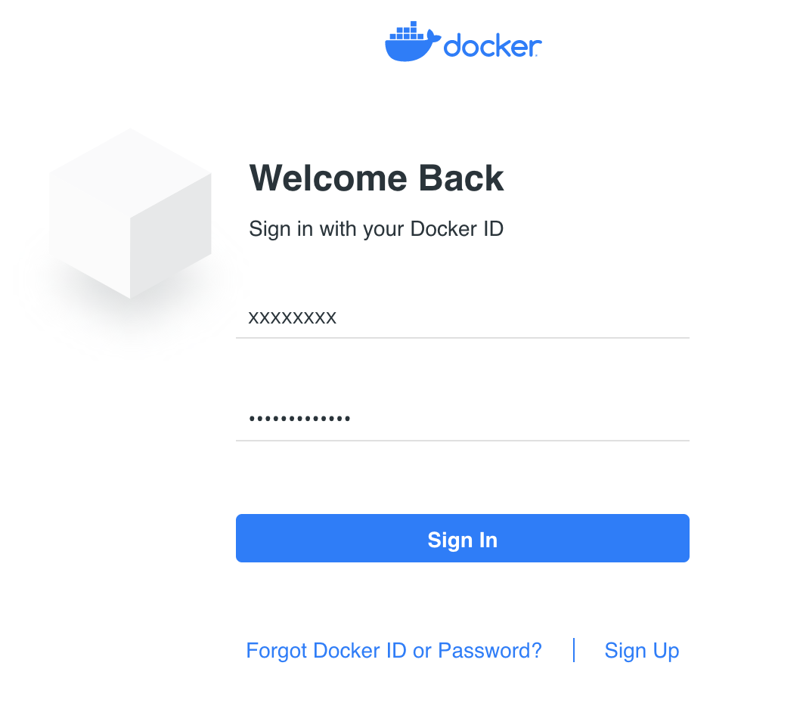
「Start」をクリック
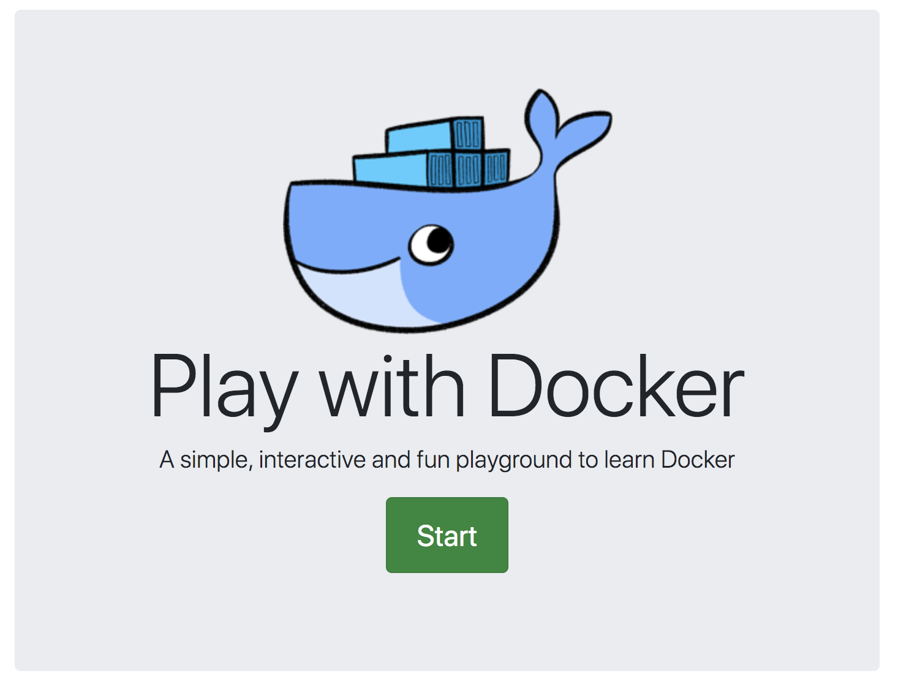
Docker Playgroundでホストを追加

準備完了
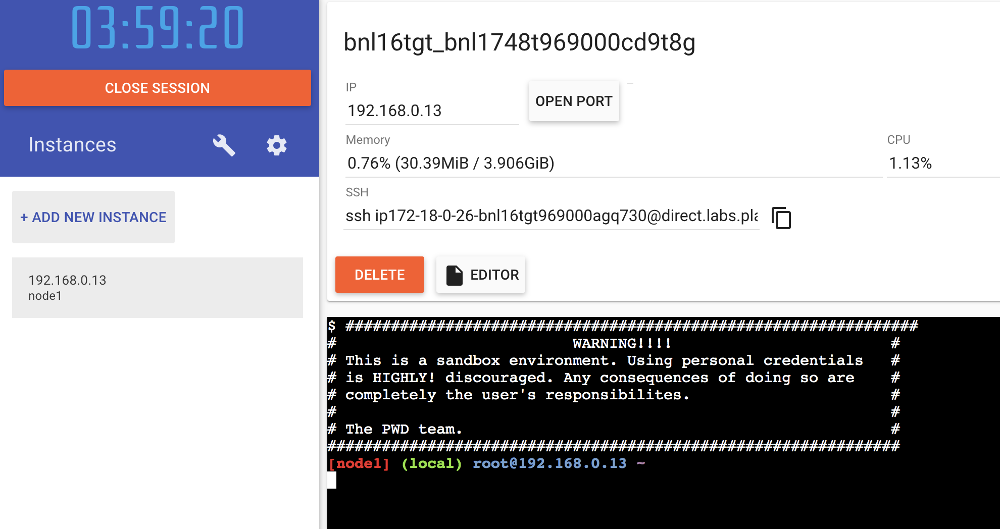
1. MySQLのデプロイ
以下のコマンドでインストール
docker run --name ＜任意の名前＞ -v ＜任意のボリューム＞:/etc/mysql/conf.d -e MYSQL_ROOT_PASSWORD=＜任意のパスワード＞ -p ＜任意のポート＞:3306 -d mysql:＜任意のタグ＞
例:
docker run --name mysql -v /my/custom:/etc/mysql/conf.d -e MYSQL_ROOT_PASSWORD=Macnica123 -p 3306:3306 -d mysql:5.6
2. Wordpressのデプロイ(1/2)
以下のコマンドでインストール
docker run --name ＜任意の名前＞ -e WORDPRESS_DB_HOST=＜MySQLのホスト名 or IP＞:＜MySQLのポート＞ -e WORDPRESS_DB_USER=＜任意のDBユーザー＞ -e WORDPRESS_DB_PASSWORD=＜任意のDB＞ -p ＜任意のポート＞:80 -d wordpress:＜任意のタグ＞
例:
docker run --name wordpress -e WORDPRESS_DB_HOST=192.168.0.13:3306 -e WORDPRESS_DB_USER=root -e WORDPRESS_DB_PASSWORD=Macnica123 -p 80:80 -d wordpress:latest
2. Wordpressのデプロイ(2/2)
Wordpressへのアクセス
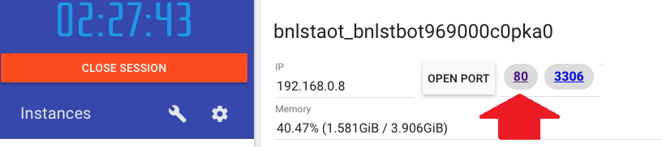Wordpressの言語設定
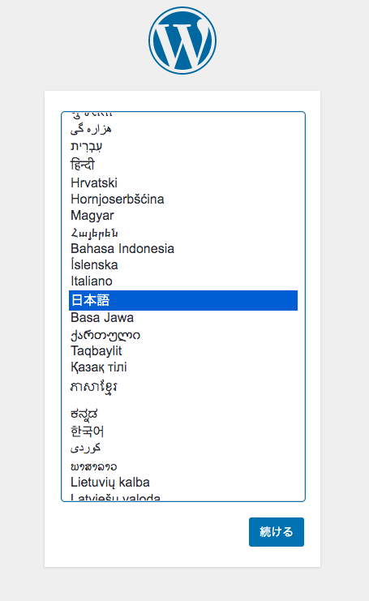Wordpressの初期設定

Wordpressの設定完了
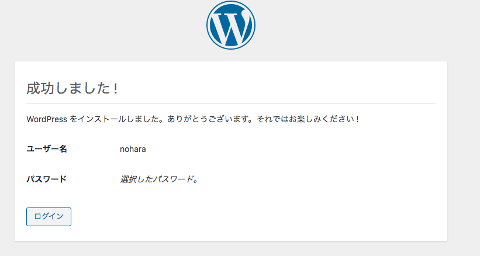Wordpressにログイン

Wordpress

docker-compose.yml
version: '2'
services:
db:
image: mysql:5.6
volumes:
- "/my/custom:/etc/mysql/conf.d"
ports:
- "3306:3306"
environment:
MYSQL_ROOT_PASSWORD: Macnica123
wordpress:
depends_on:
- db
image: wordpress:latest
ports:
- "80:80"
restart: always
environment:
WORDPRESS_DB_HOST: 192.168.0.13:3306
WORDPRESS_DB_PASSWORD: Macnica123
index.html
<!DOCTYPE html>
<html>
<head>
<title>TDU Test page</title>
</head>
<body>
<h1>[[ Hello TDU Students!]]</h1>
<h2>This is TDU docker handson!</h2>
</body>
</html>
Dockerfile
from nginx
RUN apt-get update -y
COPY index.html /usr/share/nginx/html/
RUN chmod +x /usr/share/nginx/html/index.html
EXPOSE 80
マクニカのコンテナを用いたDevOpsソリューション
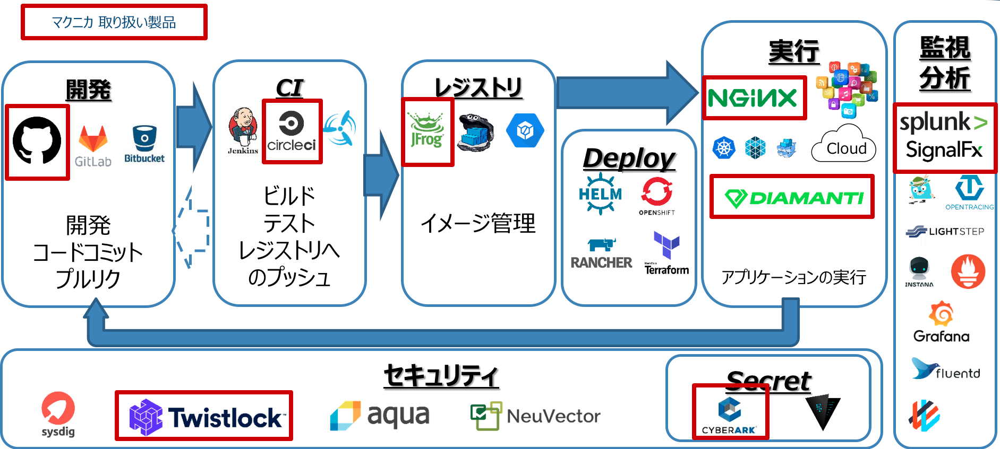We are Hiring!!
人材募集中！！
採用応募ページへ